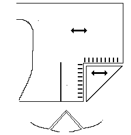

Hood design based on no. 246, as presented in Textiles and Clothing. It was in a late 14th Century deposit, and was of a tabby woven cloth. Two triangular pieces, apparently cut from the "chin" of the hood, are inserted as gussetts in the sides of the hood. The button holes were initially supported by an inner facing, or perhaps a lining. This sort of close fitting buttoned hood is seen in manuscripts, and is worn by women. They were often worn open atop other cloths, and therefore, this style is ancestral to apparel such as the later "French hoods".
Return to Contents; London Site Page or Proceed
Some Clothing of the Middle Ages - Hoods - London Hood [55] <1645/1> TB 39, by I. Marc Carlson, Copyright 1996 This code is given for the free exchange of information, provided the Author's Name is included in all future revisions, and no money change hands-